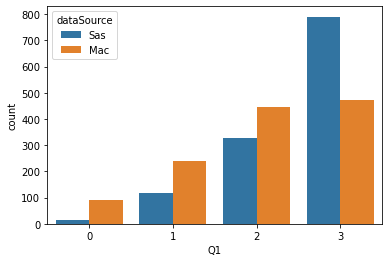
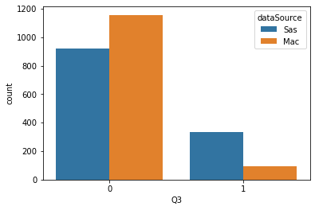
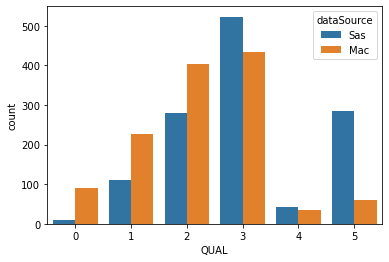
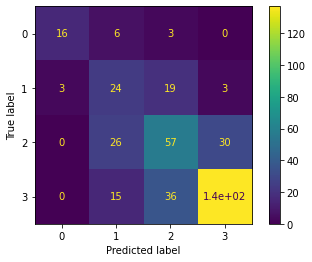
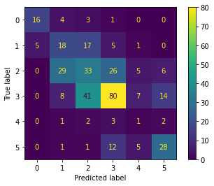

We analyzed 2500 evaluations, with 1250 from Site 1 (McMaster) and 1250 from Site 2 (Saskatchewan).
NLP-QuAL Results
QuAL Score
As a review, the QuAL score aims to assess the quality of written feedback for medical trainees. It has been validated in a GME context. It ranges from 0 (lowest quality) to 6 (highest quality). It is the sum of three subscores:
- Q1 - Does the rater provide sufficient evidence about resident performance? (Rated on a three-point scale: 0-no comment at all, 1-no, but comment present, 2-somewhat, 3-yes/full description)
- Q2 - Suggestion - Does the rater provide a suggestion for improvement? (0-no/1-yes)
- Q3 - Connection - Is the rater’s suggestion linked to the behavior described? (0-no/1-yes)
Data Descriptives and Demographics
For each evaluation, the QuAL score was rated by two separate raters. Each sub-score (Q1, Q2, and Q3) was rated and then summed to get the final QuAL score. Discrepancies were broken by members of the study team (who?)
The average QuAL score was 2.6408, with standard deviation 1.275, median 3.0
Descriptive statistics for the subscores and QuAL Score were:
| Q1 | Q2 | Q3 | QUAL | |
|---|---|---|---|---|
| count | 2500.000000 | 2500.000000 | 2500.000000 | 2500.000000 |
| mean | 2.277200 | 0.193600 | 0.170000 | 2.640800 |
| std | 0.860149 | 0.395198 | 0.375708 | 1.275157 |
| 50% | 3.000000 | 0.000000 | 0.000000 | 3.000000 |
Score Distributions
Subscores
| Q1 | Q2 | Q3 | ||||
|---|---|---|---|---|---|---|
| Count | Percent of Total | Count | Percent of Total | Count | Percent of Total | |
| 0 | 105 | 4.20 | 2016.0 | 80.64 | 2075.0 | 83.0 |
| 1 | 359 | 14.36 | 484.0 | 19.36 | 425.0 | 17.0 |
| 2 | 774 | 30.96 | NaN | NaN | NaN | NaN |
| 3 | 1262 | 50.48 | NaN | NaN | NaN | NaN |
The distribution for the subscores is plotted below:



Evaluations tended to score highly (> 2) on Q1, but poorly (80% 0 and 83% 0, respectively) on Q2 and Q3. There were large differences in scores between the two sites.
QuAL Score
The table below shows the raw counts and percentages associated with each level of the rated QuAL score.
| Count | Percent of Total | |
|---|---|---|
| 0 | 100 | 4.00 |
| 1 | 338 | 13.52 |
| 2 | 685 | 27.40 |
| 3 | 957 | 38.28 |
| 4 | 77 | 3.08 |
| 5 | 343 | 13.72 |
The distribution of the QuAL score is plotted below:

This table shows the counts/frequencies for each possible combination of subscores. For each possible final QuAL score, the table shows the combination fo subscores most likely to generate that QuAL score.
| Count | Percent of Total | ||||
|---|---|---|---|---|---|
| QUAL | Q1 | Q2 | Q3 | ||
| 0 | 0 | 0 | 0 | 100 | 4.00 |
| 1 | 0 | 1 | 0 | 5 | 0.20 |
| 1 | 0 | 0 | 333 | 13.32 | |
| 2 | 1 | 0 | 1 | 1 | 0.04 |
| 1 | 0 | 21 | 0.84 | ||
| 2 | 0 | 0 | 663 | 26.52 | |
| 3 | 1 | 1 | 1 | 4 | 0.16 |
| 2 | 0 | 1 | 2 | 0.08 | |
| 1 | 0 | 41 | 1.64 | ||
| 3 | 0 | 0 | 910 | 36.40 | |
| 4 | 2 | 1 | 1 | 68 | 2.72 |
| 3 | 0 | 1 | 7 | 0.28 | |
| 1 | 0 | 2 | 0.08 | ||
| 5 | 3 | 1 | 1 | 343 | 13.72 |
This table yields some interesting insights. The QuAL score subscores are dependent on one another. Based on the structure of the subscores, it follows that if the evaluation is not detailed enough (Q1 \(\leq\) 2), it’s unlikely to contain a suggestion for improvement (Q1 = 0), and there can be no linking between behavior and improvement (Q3 = 0). The table backs this up, with the vast majority of Q2 and Q3 rated as zero if Q1 \(\leq\) 2. If the evaluation is highly detailed (Q3 = 3), then naturally it is more likely to have a suggestion for improvement (Q2 = 1), and based on the table, it’s also likely to link the suggestion to the behavior (Q3 = 1). Q3 is essentially redundant; Q3 is discrepant from Q3 in only 3.1% of all evaluations.
This means that the QuAL score can be reduced to three primary outcomes:
- Q1 \(\leq\) 2 - low detail, very unlikely (<10%) to contain suggestion for improvement
- Q1 = 3; Q2 and Q3 = 0 - high detail, no suggestion for improvement
- Q1 = 3; Q2 and Q3 = 1 - high detail, with suggestion for improvement, extremely likely to have connection between behavior/suggestion
These three scenarios fit 2,349/2,500 = 94% of evaluations. This provides an opportunity to condense the QuAL score from 6 levels (0-5) to 3. Although the remainder of the results below do not condense the QuAL score, this could be a good way to boost accuracy results in a way that does not compromise the integrity of the score itself.
Interrater Reliability
This table shows the percent agreement for the QUAL score and each subscore
| Q1Match | Q2Match | Q3Match | QUALMatch | |||||
|---|---|---|---|---|---|---|---|---|
| Count | Percent of Total | Count | Percent of Total | Count | Percent of Total | Count | Percent of Total | |
| False | 1059 | 42.36 | 188 | 7.52 | 606 | 24.24 | 1426 | 57.04 |
| True | 1441 | 57.64 | 2312 | 92.48 | 1894 | 75.76 | 1074 | 42.96 |
| Cohen's Kappa | |
|---|---|
| Q1 | 0.387601 |
| Q2 | 0.751249 |
| Q3 | 0.351520 |
| QuAL | 0.317628 |
Cohen’s Kappas were calculated and are presented above. There was fair agreement for all scores except for Q1, which had substantial agreement. This was before any tiebreaking/discrepancy correction.
Other Demographics and Descriptive Statistics
These may or may not be relevant.
| GenderRes | GenderFac | |||
|---|---|---|---|---|
| Count | Percent of Total | Count | Percent of Total | |
| Female | 1037.0 | 41.48 | 877 | 35.08 |
| Male | 1463.0 | 58.52 | 1447 | 57.88 |
| Unknown | NaN | NaN | 176 | 7.04 |
ObserverType stratifies the evaluator by role.
| ObserverType | ||
|---|---|---|
| Count | Percent of Total | |
| clinical supervisor | 1200 | 48.0 |
| faculty | 1165 | 46.6 |
| resident | 135 | 5.4 |
Only one of the two sites reports PGY levels for their trainees on their evaluations.
| PGY | |
|---|---|
| Unknown | 1251 |
| 2 | 510 |
| 1 | 456 |
| 3 | 157 |
| 4 | 117 |
| 5 | 9 |
Model Performance
Metrics
Models were assessed using the following performance metrics:
- Balanced Accuracy - The weighted average of accuracies for each possible class (rating). In situations where the data is imbalanced, including this one, accuracy can be falsely inflated if the model over-biases against the rare classes. Balanced accuracy compensates for this and provides a more valid assessment of model performance in the real world. It is the most important metric evaluated.
- Accuracy - The percentage of time the model made the correct guess about the rating
- Top 2 Accuracy - The percentage of time the model’s first guess or second guess was correct. Only applies to targets with \(\geq\) 2 levels (Q1 and overall QuAL)
- Top 3 Accuracy - Same as above but includes first, second, or third guess.
- Mean absolute error (MAE) - Average discrepancy between the model’s guess and the true rating. Useful for Q1 and QuAL.
- ROC AUC Score - Area under the receiver operating curve. Common metric reported in ML literature. Subject to inflation if classes are imbalanced. Only well-defined for two-class targets (Q2 and Q3).
- Precision - Positive predictive value, the chance that a “positive” prediction (usually defined as the outcome of interest, in this case lower quality) is actually correct. Best defined for two-class targets, but averages can be taken for multi-class targets (Q1 and QuAL).
- Recall - Sensitivity
- F1 - The geometric mean of precision and recall, often reported in the ML literature.
- Confusion Matrix - A n_classes by n_classes matrix, where the \(i,j\)th entry is the number of items with true rating \(i\) and predicted rating \(j\). A perfect classifier would produce a confusion matrix non-zero only on the diagonal. The confusion matrix shows you which ratings the model is struggling with.
- Support - Not a metric, per se, but the number of items in the test set which received the given rating.
Q1
Q1 assessed the level of evidence about the learner’s performance provided in the evaluation. Specifically, Q1 asked, “Does the rater provide sufficient evidence about resident performance?” It was rated on a three-point scale: 0-no comment at all, 1-no, but comment present, 2-somewhat, 3-yes/full description.
The table below shows the model performance metrics for Q1.
| Score | |
|---|---|
| balanced_accuracy | 0.590736 |
| accuracy | 0.624000 |
| top_2_acc | 0.880000 |
| top_3_acc | 0.973333 |
| precision | 0.620417 |
| recall | 0.590736 |
| f1 | 0.598159 |
Overall, model performance for Q1 is relatively weak when considered from an absolute accuracy standpoint, getting on average 59% of predictions correct. However, as Q1 has four possible ratings (0-3), random guessing would be correct only 25% of the time, so our model performs 2.36 times better than random. Looking at the Top 2 Accuracy, we see the model contains the true rating within its top-2 predictions 88% of the time, which further demonstrates that the model is “on the right track.”
Exploring performance by class level and visualizing the confusion matrix, we can begin to see the reasons for high/low performance:
| F1 Score | Support | |
|---|---|---|
| Q1 Rating | ||
| 0 | 0.727273 | 25.0 |
| 1 | 0.400000 | 49.0 |
| 2 | 0.500000 | 113.0 |
| 3 | 0.765363 | 188.0 |

The model performs best at the extremes, the Q1 = 0 and Q1 = 3 ratings perform well, but when Q1 = 1 and Q1 = 2, the model has trouble differentiating the “nuances” at this level. This is to be expected, as the human raters struggled to differentiate between these levels as well. The table below shows the percent of human rater agreement for Q1 stratified by Q1 rating:
| Percent Human Match | |
|---|---|
| Q1 | |
| 0 | 97.142857 |
| 1 | 84.679666 |
| 2 | 40.439276 |
| 3 | 57.210777 |
Q2
Q2 assessed whether or not the evaluator provided a suggestion for improvement in the written evaluation. It asked, “Does the rater provide a suggestion for improvement? (0-no/1-yes)”
Note
Because it is more important to identify low-quality feedback, when the model was trained, the ratings were inverted. That is, the “positive” (thing that needed to be identified) was switched to Q2 = 0.
The table below shows the model performance metrics for Q3.
| Score | |
|---|---|
| balanced_accuracy | 0.775220 |
| accuracy | 0.834667 |
| precision | 0.923611 |
| recall | 0.869281 |
| f1 | 0.895623 |
Q2 was the highest performing model, as it represented the simplest question - simply, was there a suggestion or not. It was better at predicting if there was not a suggestion. It had 92% sensitivity detecting failure to provide a suggestion, with a PPV of 86.9%.
Q3
Q3 assessed if the evalutor connected the learner’s behavior with the suggestion for improvement. Specifically, it asked, “Is the rater’s suggestion linked to the behavior described? (0-no/1-yes)”
Note
Because it is more important to identify low-quality feedback, when the model was trained, the ratings were inverted. That is, the “positive” (thing that needed to be identified) was switched to Q3 = 0.
The table below shows the model performance metrics for Q3.
| Score | |
|---|---|
| balanced_accuracy | 0.764813 |
| accuracy | 0.845333 |
| precision | 0.933333 |
| recall | 0.880503 |
| f1 | 0.906149 |
Q3 performed as well or better than Q2. It had a 93% sensitivity for failure to connect action to suggestion and a PPV of 88%. Q2 and Q3 are nearly redundant (discrepant only 3% of the time), as show in Table 4, so it makes sense that Q3 is a high-performer.
QuAL
The table below shows the model performance metrics for the overall QuAL score.
| Score | |
|---|---|
| balanced_accuracy | 0.438582 |
| accuracy | 0.469333 |
| top_2_acc | 0.749333 |
| top_3_acc | 0.890667 |
| mae | 0.722667 |
| precision | 0.439958 |
| recall | 0.438582 |
| f1 | 0.435110 |
Overall, ***
Exploring performance by class level and visualizing the confusion matrix, we can begin to see the reasons for high/low performance:
| F1 Score | Support | |
|---|---|---|
| QuAL Rating | ||
| 0 | 0.711111 | 24.0 |
| 1 | 0.336449 | 46.0 |
| 2 | 0.336735 | 99.0 |
| 3 | 0.577617 | 150.0 |
| 4 | 0.071429 | 9.0 |
| 5 | 0.577320 | 47.0 |
